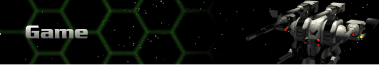

› |
› |
Game |

Save Game / Load Game
From anywhere in the game you can save your current game or load a previously saved game.
Save Herc Configuration / Load Herc Configuration
From the Herc Bay, you can save and load a particular Herc configuration. You must be in the Purchase Herc section in order to load a Herc configuration. Likewise, you must be in the Manage Hercs section with a particular Herc selected in order to save a Herc configuration. Saving a particular Herc configuration makes it easy to purchase that same Herc at a later time without having to go through the multiple setup steps of systems, weapon, and device purchases.
Exit – exits the game.